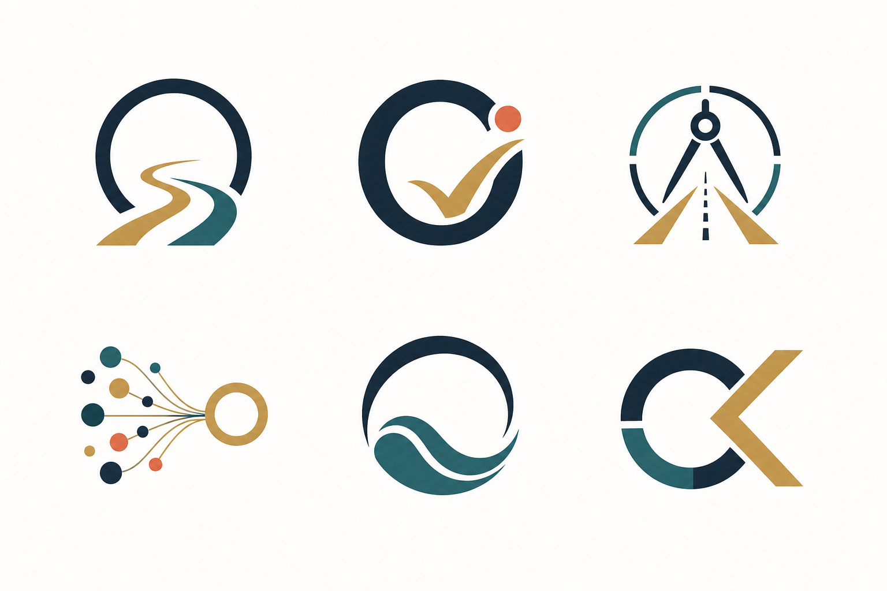

Open Path
An unfinished O becomes a route forward. It says: nothing has to be perfect before movement begins.
Brand Exploration
Six directions built around calm acceptance, solution architecture, and the confidence to turn complex problems into a workable path.
An unfinished O becomes a route forward. It says: nothing has to be perfect before movement begins.
A refined “okay” check inside the O. Direct, confident, and memorable for the meaning behind the name.
For the Solution Architect identity: direction, judgement, and navigation through ambiguity.
Many problems, one coherent answer. Strong for consulting, ventures, and MVP creation.
A softer mark for “it is okay”: calm energy, resilience, and flow around complexity.
An abstract O and K hidden in a stable architectural form. Best if you want a distinctive monogram.
Wordmark Feel
Okayma.com
Okayma.com
Okayma.com
Generated Inspiration Sheet
This is the AI-generated inspiration sheet used to spark the vector concepts above.
